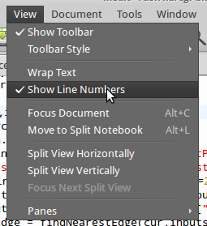

To implement our routing functions as WPS services, we'll need to decide on which functions we're going to make available, and decide on the number of parameters that they require.
It's probably not necessary to give the end-users of a WPS the choice of several different shortest path calculations, and neither is it wise to require them to fill in the name of the various tables and columns needed for the query. As the holders of the routing data we can also decide whether to use direction (aka reverse_cost) in our query. This simplifies the number of inputs, from:
to:
The rest of the parameters will be filled in within our python module, along with the database connection information.
The python coding for this is going to get quite complex (we'll look through it shortly) but the config is quite straightforward.
On the desktop, click on "File System" and navigate to "usr\lib\cgi-bin\routing". There are a number of service config files in here, but we'll concentrate on do.zcfg. Right-click to open this in medit.
This config file has the same three sections that we've seen previously:
Since the service requires exactly two inputs- the starting node (source) and end node (target), these are both described in the config as being of type complexData. Each point requires an easting and a northing to be valid, so minOccurs and maxOccurs are both set to 2.
The key thing to note about the output is the format of the output data:
<Default>
mimeType = application/json
asReference = true
msStyle = STYLE COLOR 0 255 0 OUTLINECOLOR 75 75 75 WIDTH 3.8 OUTLINEWIDTH 0.8 END
useMapserver = true
extension = json
</Default>
This is a directive to allow ZOO to output in mapserver format, with a style as defined in the msStyle parameter.
The do.zcfg file references service.py in the routing folder, so using medit, open /usr/lib/cgi-bin/routing/service.py.
The scripting for this part is quite complex, and service.py contains a large number of functions that we won't be covering in this workshop.
Firstly, switch on line numbers in medit by clicking "View/Show Line Numbers": 
Lines 2 to 6 show the additional modules that are needed for running the routing script- the important new one here is psycopg2, which allows python to connect to a postgreSQL database and execute SQL statements.
Line 18 shows the database connection function, and the connection string for the local pgrouting database can be seen clearly.
Scroll down to the "do" module at line 298.
This functions takes the same parameters as our "hello world" function, and like the buffer function, it references a number of helper functions earlier in the script:
The rest of the computeRoute function (lines 187 to 275) are designed to create a temporary table in the database holding the results of the journey calculation, along with elevation and descriptive information about each step in the route, all in such a way that it can be converted into feature collections (remember our buffer function did something similar) for output as json. Finally this is returned to the do function in a format suitable for display on the map.
Finally the do function closes it's connection to the database and returns 3, which is the shortcut for the SERVICE_SUCCEEDED response that the WPS service needs. Phew!